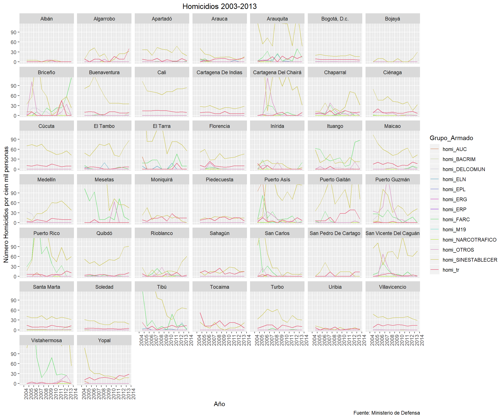
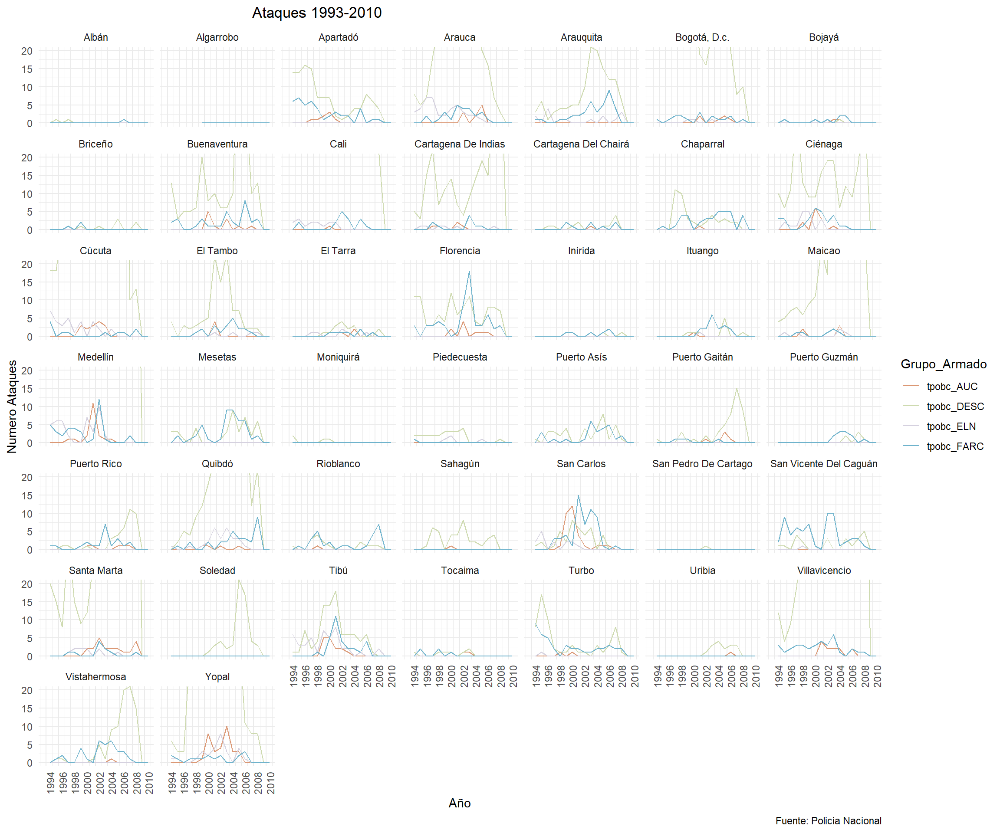
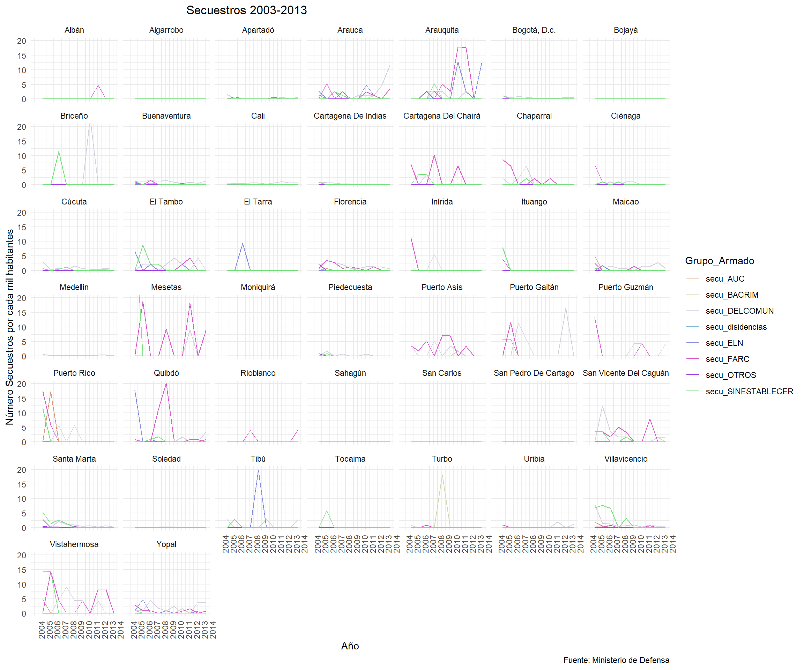
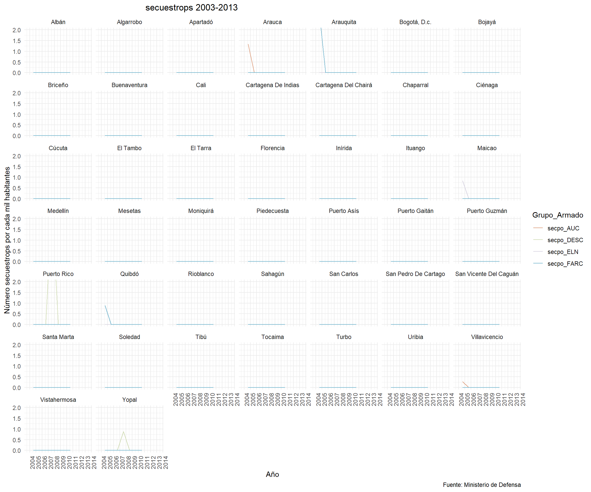

Con este codigo se importan todas las bases de datos y todos los paquetes necesarios.
#ANTES DE CORRER, ¡CORRER LA PESTANA "CODIGO PARA ARRANCAR TODO"!
#Set Working Directory
setwd("C:/Users/felig/Dropbox/Proyecto Juan Camilo")
rm(list=ls())
load("C:/Users/felig/Dropbox/Proyecto Juan Camilo/MergeBases_Environment.RData")
#Cargar paquetes
library(readstata13)
library(tidyr)
library(dplyr)
library(data.table)
library(readxl)
library(doBy)
library(vtable)
library(plyr)
library(gridExtra)
library(grid)
library(purrr)
library(psych)
library(ggplot2)
library(psych)
library(Hmisc)
library(matrixStats)
library(ggpubr)
library(vtable)
library(ggthemes)
library(stringr)Esta seccion esta dividiad por variables. Dentro de cada variable hay dos secciones. En la primer se observa un grafico que muestra las tendencias de la variable para los 44 municipios del ACDI-VOCA. *** La segunda seccion tiene los descriptivos de esas variables. Para mas informacion, acercarse a la descripcion de esa seccion.
En esta base de datos es necesario hacer un tidy de la base de datos. Es decir, transformar algunas columnas en filas.
Para mas informacion sobre la concepcion del tidy ver: Paper tidy
homi_GA <- grep('homi_{1}', names(cede_conflicto_44), value = T) %>% grep('_pn',.,value = T, invert = T)
# Tidy data table - homicidios de transito
conflicto_44_tidy <- gather(cede_conflicto_44, 'Grupo_Armado', 'Numero_Homicidios', homi_GA)
conflicto_44_tidy$ano_base_general <- as.Date(conflicto_44_tidy$ano_base_general, '%Y', na.rm=T)Observe que, para ciertas variables, se debe calcular un indice que normalice las poblaciones de cada municipio. Esta variable tiene esa transformacion. Esta variable se transforma para que quede medida por cien mil habitantes. Asi, la transformacion que se le hace a estas variables es:
\(T = \frac{N_{t}}{P_{t}} \times 100 000\)
En donde: \(T=\) La tasa por 100 mil habitantes \(N_{t}=\) Numero total de la variable de interes \(P_{t}=\) Poblacion total en el periodo \(t\)
Por lo tanto, generamos el siguiente codigo para poder crear esta variable. El nombre de esas variables es **_cienmil**
#Loop para saber poder saber qué observaciones concuerdan tanto en el año del censo como en el año del conflicto. Esto es necesario para generar el índice porque debe haber concordancia en el año de ambas bases.
a <- c()
for(i in 1:nrow(conflicto_44_tidy)){
if(conflicto_44_tidy$ano[i]==conflicto_44_tidy$ano_base_general[i]){
a <- c(a,i)
}
}
#Limpiamos base de datos para que queden solamente las observaciones que concuerden en año de conflicto y en año del censo
conflicto_44_tidy <- conflicto_44_tidy[a,]
conflicto_44_tidy <- conflicto_44_tidy %>%
dplyr::mutate(homi_cienmil=(Numero_Homicidios/pobl_tot)*100000)En este codigo se crea el grafico que muestra las tendencias en funcion del tiempo para todos los departamentos del cuestionario ACDI-VOCA.
Grafico Homicidios FARC
conflicto_44_tidy %>%
filter(Grupo_Armado=="homi_FARC") %>%
ggplot(
aes(x = ano, y = homi_cienmil)) +
geom_col() +
scale_color_manual(values = palette) +
facet_wrap(~Municipio) +
labs(y='Número Homicidios por cien mil personas', title='Homicidios FARC 2013', x= 'Año', caption="Fuente: Ministerio de Defensa") +
scale_x_date(date_breaks = '1 year', date_labels = '%Y',
limits = c(as.Date('2003', format = '%Y'), as.Date('2013', format = '%Y'))) +
theme(plot.title = element_text(hjust = 0.5), axis.text.x = element_text(angle=90))Graficos homicidios por ano y municipio
library(randomcoloR)
n <- 13
palette <- distinctColorPalette(n)
ggplot(conflicto_44_tidy,
aes(x=ano, y = homi_cienmil, color= Grupo_Armado)) +
geom_line() +
scale_color_manual(values = palette) +
facet_wrap(~Municipio) +
labs(y='Número Homicidios por cien mil personas', title='Homicidios 2003-2013', x= 'Año', caption="Fuente: Ministerio de Defensa") +
scale_x_date(date_breaks = '1 year', date_labels = '%Y',
limits = c(as.Date('2003', format = '%Y'), as.Date('2013', format = '%Y'))) +
theme(plot.title = element_text(hjust = 0.5), axis.text.x = element_text(angle=90))+
coord_cartesian(ylim = c(0, 110))
En esta seccion se generan los descriptivos agregados de la variable.
Aqui se genera el collapse por anos para cada municipio. Es decir, aqui se encuentran los descriptivos de la variable para cada municipio, en donde se hizo un collapse por anos.
El nombre de la variable agregada es : descrip_
descrip_homi <- summaryBy(homi_cienmil ~ Municipio, conflicto_44_tidy, FUN=c(sum,mean,sd), na.rm=T ) #Codigo para hacer descriptivos de los homicidios (collapse por años)
descrip_homi %<>% arrange(Municipio)
print(descrip_homi)## Municipio homi_cienmil.sum homi_cienmil.mean
## 1 Albán 45.84533 0.3183704
## 2 Algarrobo 436.37369 3.0303729
## 3 Apartadó 446.19427 3.0985713
## 4 Arauca 381.30738 2.6479679
## 5 Arauquita 1402.51499 9.7396874
## 6 Bogotá, D.c. 307.60780 2.1361653
## 7 Bojayá 69.86716 0.5292967
## 8 Briceño 1256.07947 8.7227741
## 9 Buenaventura 831.55827 5.7747102
## 10 Cali 1029.13952 7.1468022
## 11 Cartagena De Indias 367.77874 2.5540190
## 12 Cartagena Del Chairá 1413.68627 9.8172658
## 13 Chaparral 687.22285 4.7723809
## 14 Ciénaga 769.71876 5.3452692
## 15 Cúcuta 839.89631 5.8326132
## 16 El Tambo 772.45957 5.3643026
## 17 El Tarra 1646.21401 11.4320417
## 18 Florencia 649.84036 4.5127802
## 19 Inírida 263.88676 1.8325469
## 20 Ituango 875.43996 6.0794442
## 21 Maicao 928.60583 6.4486516
## 22 Medellín 647.02896 4.4932567
## 23 Mesetas 2197.99604 15.2638614
## 24 Moniquirá 377.64253 2.6225176
## 25 Piedecuesta 308.43539 2.1419125
## 26 Puerto Asís 1701.61280 11.8167556
## 27 Puerto Gaitán 1251.67293 8.6921731
## 28 Puerto Guzmán 1071.56559 7.4414277
## 29 Puerto Rico 1631.31192 11.3285550
## 30 Quibdó 656.53168 4.5592478
## 31 Rioblanco 383.84762 2.6656085
## 32 Sahagún 337.02178 2.3404290
## 33 San Carlos 1061.27731 7.3699813
## 34 San Pedro De Cartago 180.17205 1.2511948
## 35 San Vicente Del Caguán 1084.86193 7.5337634
## 36 Santa Marta 601.84849 4.1795034
## 37 Soledad 317.86272 2.2073800
## 38 Tibú 1897.55059 13.1774347
## 39 Tocaima 353.57063 2.4553516
## 40 Turbo 592.85314 4.1170357
## 41 Uribia 104.31566 0.7244143
## 42 Villavicencio 591.57735 4.1081761
## 43 Vistahermosa 2754.99270 19.1318937
## 44 Yopal 715.53174 4.9689704
## homi_cienmil.sd
## 1 1.390329
## 2 10.455535
## 3 9.437473
## 4 7.472491
## 5 28.531541
## 6 5.419732
## 7 3.092150
## 8 24.958067
## 9 18.783361
## 10 21.457661
## 11 7.039005
## 12 33.666644
## 13 11.475143
## 14 16.316105
## 15 18.243975
## 16 17.011147
## 17 40.448551
## 18 11.931138
## 19 5.515050
## 20 15.906239
## 21 18.528701
## 22 13.607379
## 23 50.109224
## 24 7.128770
## 25 5.160020
## 26 30.524301
## 27 27.770494
## 28 19.704072
## 29 34.015359
## 30 15.088972
## 31 7.905653
## 32 5.881404
## 33 29.952669
## 34 4.921600
## 35 21.327089
## 36 10.898448
## 37 6.724462
## 38 47.298053
## 39 7.239260
## 40 11.829134
## 41 2.100732
## 42 10.825425
## 43 57.269910
## 44 16.391886A continuacion se generan las variables necesarias para hacer el \(\Delta\). Para obtener el \(\Delta\) se hace la diferencia de la variable entre los primeros 5 anos y los ultimos 5 anos de los datos disponibles. Por ejemplo, si la variable de interes se recolecto entre 1997 y 2016, el \(\Delta\) sera la reste entre el collapase de los anos 1997 a 2001 y el collapse de los anos 2012 a 2016. El nombre de la varible \(\Delta\) es: diff_
descrip_homi_5antes <- conflicto_44_tidy %>%
filter(ano<"2008-04-27") #Codigo para seleccionar solamente las variables que sean menores al ano 2008
descrip_homi_5antes <- summaryBy(homi_cienmil ~ Municipio, descrip_homi_5antes, FUN=c(sum,mean,sd), na.rm=T ) #Descriptivos de esos anos.
descrip_homi_5despues <- conflicto_44_tidy %>%
filter(ano>"2008-04-27") #Codigo para seleccionar solamente las variables que sean mayores al ano 2008.
descrip_homi_5despues <- summaryBy(homi_cienmil ~ Municipio, descrip_homi_5despues, FUN=c(sum,mean,sd), na.rm=T ) #Descriptivos de esos anos. Codigo para calcular el \(\Delta\)
diff_homi_mean <- descrip_homi_5antes$homi_cienmil.mean -descrip_homi_5despues$homi_cienmil.mean
diff_homi_sd <- descrip_homi_5antes$homi_cienmil.sd -descrip_homi_5despues$homi_cienmil.sd #Sacar diferencias entre esos estadisticos. Un valor negativo es que hay mas ataques en los ultimos 5 anos.
print(diff_homi_mean)## [1] 0.1556365 -1.2465588 0.3967088 1.9421570 -3.3448847 0.3172926
## [7] -0.3557937 1.9890550 4.0878617 0.8421362 0.3495611 5.1748375
## [13] -0.4122171 3.6873678 2.6136124 -0.3395640 9.0333624 1.5272769
## [19] 1.6806620 1.5078817 2.1442660 -0.8286532 15.1532829 0.3660521
## [25] -0.4908229 7.4234786 -2.1299733 6.6595616 6.4697559 -1.5552689
## [31] -0.9346482 -0.5252088 14.2144390 0.4897438 2.2793477 0.3998321
## [37] 0.7367047 14.0159062 0.5855566 0.8371626 0.3169249 0.3733389
## [43] 10.4539505 3.6007460En esta base de datos es necesario hacer un tidy de la base de datos. Es decir, transformar algunas columnas en filas.
ataque_GA <- grep("tpobc_{1}", names(cede_conflicto_44), value = T)
conflicto_44_ataque <- gather(cede_conflicto_44, key= "Grupo_Armado", value= "Ataques_Pobl_Civil", ataque_GA) En este codigo se crea el grafico que muestra las tendencias en funcion del tiempo para todos los departamentos del cuestionario ACDI-VOCA.
Graficos ataques, por Municipio por actor armado (numeros brutos)
ggplot(conflicto_44_ataque,
aes(x=ano, y = Ataques_Pobl_Civil, color= Grupo_Armado)) +
geom_line() +
scale_color_manual(values = palette) +
facet_wrap(~Municipio) +
labs(y='Numero Ataques', title='Ataques 1993-2010', x= 'Año', caption="Fuente: Policia Nacional") +
coord_cartesian(ylim=c(0,20))+
theme_minimal()+
scale_x_date(date_breaks = '2 year', date_labels = '%Y',
limits = c(as.Date('1993', format = '%Y'), as.Date('2010', format = '%Y'))) +
theme(plot.title = element_text(hjust = 0.3), axis.text.x = element_text(angle=90))
En esta seccion se generan los descriptivos agregados de la variable.
Aqui se genera el collapse por anos para cada municipio. Es decir, aqui se encuentran los descriptivos de la variable para cada municipio, en donde se hizo un collapse por anos.
El nombre de la variable agregada es : descrip_
descrip_ataques <- summaryBy(Ataques_Pobl_Civil ~ Municipio, conflicto_44_ataque, FUN=c(sum,mean,sd), na.rm=T ) #Codigo para hacer descriptivos de los ataques (collapse por anos)
descrip_ataques %<>% arrange(Municipio)
print(descrip_ataques)## Municipio Ataques_Pobl_Civil.sum Ataques_Pobl_Civil.mean
## 1 Albán 75 0.04166667
## 2 Algarrobo 0 0.00000000
## 3 Apartadó 4775 2.65277778
## 4 Arauca 11275 6.26388889
## 5 Arauquita 4575 2.54166667
## 6 Bogotá, D.c. 13600 7.55555556
## 7 Bojayá 275 0.15277778
## 8 Briceño 300 0.16666667
## 9 Buenaventura 7050 3.91666667
## 10 Cali 23450 13.02777778
## 11 Cartagena De Indias 6900 3.83333333
## 12 Cartagena Del Chairá 525 0.29166667
## 13 Chaparral 2075 1.15277778
## 14 Ciénaga 7350 4.08333333
## 15 Cúcuta 37325 20.73611111
## 16 El Tambo 3300 1.83333333
## 17 El Tarra 850 0.47222222
## 18 Florencia 4825 2.68055556
## 19 Inírida 200 0.11111111
## 20 Ituango 700 0.38888889
## 21 Maicao 10350 5.75000000
## 22 Medellín 46475 25.81944444
## 23 Mesetas 2225 1.23611111
## 24 Moniquirá 100 0.05555556
## 25 Piedecuesta 800 0.44444444
## 26 Puerto Asís 1650 0.91666667
## 27 Puerto Gaitán 1450 0.80555556
## 28 Puerto Guzmán 425 0.23611111
## 29 Puerto Rico 1600 0.88888889
## 30 Quibdó 8700 4.83333333
## 31 Rioblanco 1100 0.61111111
## 32 Sahagún 1025 0.56944444
## 33 San Carlos 3500 1.94444444
## 34 San Pedro De Cartago 25 0.01388889
## 35 San Vicente Del Caguán 2250 1.25000000
## 36 Santa Marta 16350 9.08333333
## 37 Soledad 1450 0.80555556
## 38 Tibú 4675 2.59722222
## 39 Tocaima 375 0.20833333
## 40 Turbo 3250 1.80555556
## 41 Uribia 425 0.23611111
## 42 Villavicencio 25250 14.02777778
## 43 Vistahermosa 2925 1.62500000
## 44 Yopal 13975 7.76388889
## Ataques_Pobl_Civil.sd
## 1 0.1998818
## 2 0.0000000
## 3 4.2213614
## 4 13.1375680
## 5 4.3979931
## 6 15.8875713
## 7 0.4302268
## 8 0.5271927
## 9 9.1794384
## 10 27.2212091
## 11 9.3611975
## 12 0.6961640
## 13 2.1457439
## 14 6.9755987
## 15 58.4677885
## 16 4.1977256
## 17 0.8496185
## 18 3.9480591
## 19 0.3558280
## 20 1.0616824
## 21 14.9408227
## 22 49.8965930
## 23 2.3309614
## 24 0.2833576
## 25 0.9114321
## 26 1.7062648
## 27 2.3318307
## 28 0.7169251
## 29 2.0658662
## 30 9.5362157
## 31 1.2973179
## 32 1.5354473
## 33 3.2322070
## 34 0.1170624
## 35 2.3679700
## 36 20.9785287
## 37 3.2225188
## 38 3.6852987
## 39 0.4983993
## 40 3.5546980
## 41 0.7906671
## 42 31.7700763
## 43 4.1257253
## 44 17.0817713A continuacion se generan las variables necesarias para hacer el \(\Delta\). Para obtener el \(\Delta\) se hace la diferencia de la variable entre los primeros 5 anos y los ultimos 5 anos de los datos disponibles. Por ejemplo, si la variable de interes se recolecto entre 1997 y 2016, el \(\Delta\) sera la reste entre el collapase de los anos 1997 a 2001 y el collapse de los anos 2012 a 2016. El nombre de la varible \(\Delta\) es: diff_
descrip_ataques_5antes <- conflicto_44_ataque %>%
filter(ano<"1997-04-27") #Codigo para seleccionar solamente las variables que sean menores al ano 2008
descrip_ataques_5antes <- summaryBy(Ataques_Pobl_Civil ~ Municipio,
descrip_ataques_5antes, FUN=c(sum,mean,sd), na.rm=T ) #Descriptivos de esos anos.
descrip_ataques_5despues <- conflicto_44_ataque %>%
filter(ano>"2004-04-27") #Codigo para seleccionar solamente las variables que sean mayores al ano 2008.
descrip_ataques_5despues <- summaryBy(Ataques_Pobl_Civil ~ Municipio,
descrip_ataques_5despues, FUN=c(sum,mean,sd), na.rm=T ) #Descriptivos de esos anos. Codigo para calcular el \(\Delta\)
diff_ataques_mean <-
descrip_ataques_5antes$Ataques_Pobl_Civil.mean -
descrip_ataques_5despues$Ataques_Pobl_Civil.mean
diff_ataques_sd <-
descrip_ataques_5antes$Ataques_Pobl_Civil.sd -
descrip_ataques_5despues$Ataques_Pobl_Civil.sd #Sacar diferencias entre esos estadisticos. Un valor negativo es que hay mas ataques en los ultimos 5 anos.
print(diff_ataques_mean)## [1] 0.02678571 NaN 4.48214286 -0.86607143 -1.97321429
## [6] 6.09821429 -0.15178571 -0.11607143 -2.33035714 1.04464286
## [11] -3.33928571 -0.19642857 -0.75000000 0.10714286 -20.15178571
## [16] -0.55357143 -0.39285714 1.27678571 -0.17857143 -0.46428571
## [21] -6.83035714 22.57142857 -1.13392857 0.12500000 0.45535714
## [26] -0.65178571 -1.41964286 -0.53571429 -1.32142857 -5.32142857
## [31] -0.41964286 -0.29464286 0.04464286 0.00000000 0.40178571
## [36] -6.91964286 -1.71428571 0.78571429 0.25000000 4.09821429
## [41] -0.46428571 -16.33035714 -2.86607143 -3.93750000En esta base de datos es necesario hacer un tidy de la base de datos. Es decir, transformar algunas columnas en filas.
secuestro_GA <- grep("secu_{1}", names(cede_conflicto_44), value = T)
conflicto_44_secuestro <- gather(cede_conflicto_44, key= "Grupo_Armado", value= "Secuestros", secuestro_GA)
conflicto_44_secuestro$ano_base_general <- as.Date(conflicto_44_secuestro$ano_base_general, '%Y', na.rm=T)Observe que, para ciertas variables, se debe calcular un indice que normalice las poblaciones de cada municipio. Esta variable tiene esa transformacion. Esta variable se transforma para que quede medida por cien mil habitantes. Asi, la transformacion que se le hace a estas variables es:
\(T = \frac{N_{t}}{P_{t}} \times 100 000\)
En donde: \(T=\) La tasa por 100 mil habitantes \(N_{t}=\) Numero total de la variable de interes \(P_{t}=\) Poblacion total en el periodo \(t\)
Por lo tanto, generamos el siguiente codigo para poder crear esta variable. El nombre de esas variables es **_cienmil**
#Loop para saber poder saber qué observaciones concuerdan tanto en el año del censo como en el año del conflicto. Esto es necesario para generar el índice porque debe haber concordancia en el año de ambas bases.
a <- c()
for(i in 1:nrow(conflicto_44_secuestro)){
if(conflicto_44_secuestro$ano[i]==conflicto_44_secuestro$ano_base_general[i]){
a <- c(a,i)
}
}
#Limpiamos base de datos para que queden solamente las observaciones que concuerden en año de conflicto y en año del censo
conflicto_44_secuestro <- conflicto_44_secuestro[a,]
conflicto_44_secuestro <- conflicto_44_secuestro %>%
dplyr::mutate(secuestro_cienmil=(Secuestros/pobl_tot)*100000)En este codigo se crea el grafico que muestra las tendencias en funcion del tiempo para todos los departamentos del cuestionario ACDI-VOCA.
ggplot(conflicto_44_secuestro,
aes(x=ano, y = secuestro_cienmil, color= Grupo_Armado)) +
geom_line() +
scale_color_manual(values = palette) +
facet_wrap(~Municipio) +
labs(y='Número Secuestros por cada mil habitantes', title='Secuestros 2003-2013', x= 'Año', caption="Fuente: Ministerio de Defensa") +
theme_minimal()+
scale_x_date(date_breaks = '1 year', date_labels = '%Y',
limits = c(as.Date('2003', format = '%Y'), as.Date('2013', format = '%Y'))) +
theme(plot.title = element_text(hjust = 0.3), axis.text.x = element_text(angle=90))+
coord_cartesian(ylim=c(0,20)) 
En esta seccion se generan los descriptivos agregados de la variable.
Aqui se genera el collapse por anos para cada municipio. Es decir, aqui se encuentran los descriptivos de la variable para cada municipio, en donde se hizo un collapse por anos.
El nombre de la variable agregada es : descrip_
descrip_secuestro <- summaryBy(secuestro_cienmil ~ Municipio, conflicto_44_secuestro, FUN=c(sum,median,mean,sd), na.rm=T )
descrip_secuestro %<>% arrange(Municipio)
print(descrip_secuestro)## Municipio secuestro_cienmil.sum secuestro_cienmil.median
## 1 Albán 4.7664442 0
## 2 Algarrobo 0.0000000 0
## 3 Apartadó 4.8111574 0
## 4 Arauca 60.7391966 0
## 5 Arauquita 111.5547752 0
## 6 Bogotá, D.c. 9.8043155 0
## 7 Bojayá 0.0000000 0
## 8 Briceño 34.2649244 0
## 9 Buenaventura 22.2120316 0
## 10 Cali 8.5873781 0
## 11 Cartagena De Indias 4.2352533 0
## 12 Cartagena Del Chairá 37.6336273 0
## 13 Chaparral 42.8482025 0
## 14 Ciénaga 28.4921903 0
## 15 Cúcuta 14.0054072 0
## 16 El Tambo 54.2083729 0
## 17 El Tarra 9.2781592 0
## 18 Florencia 50.2416799 0
## 19 Inírida 16.7978071 0
## 20 Ituango 19.5393224 0
## 21 Maicao 36.0332228 0
## 22 Medellín 6.0692848 0
## 23 Mesetas 119.8328532 0
## 24 Moniquirá 0.0000000 0
## 25 Piedecuesta 9.3850165 0
## 26 Puerto Asís 51.3776088 0
## 27 Puerto Gaitán 62.6458601 0
## 28 Puerto Guzmán 34.8536587 0
## 29 Puerto Rico 69.3002078 0
## 30 Quibdó 89.2179159 0
## 31 Rioblanco 7.9710151 0
## 32 Sahagún 1.1416307 0
## 33 San Carlos 6.2375250 0
## 34 San Pedro De Cartago 0.0000000 0
## 35 San Vicente Del Caguán 70.7779930 0
## 36 Santa Marta 35.6699091 0
## 37 Soledad 0.7651931 0
## 38 Tibú 31.2360033 0
## 39 Tocaima 5.8153059 0
## 40 Turbo 22.3778006 0
## 41 Uribia 5.0015418 0
## 42 Villavicencio 58.6084671 0
## 43 Vistahermosa 110.3947616 0
## 44 Yopal 49.6905125 0
## secuestro_cienmil.mean secuestro_cienmil.sd
## 1 0.054164139 0.50810466
## 2 0.000000000 0.00000000
## 3 0.054672243 0.22306458
## 4 0.690218143 1.66953091
## 5 1.267667900 3.49903911
## 6 0.111412676 0.27181510
## 7 0.000000000 0.00000000
## 8 0.389374141 2.71128799
## 9 0.252409450 0.52681633
## 10 0.097583843 0.21345722
## 11 0.048127879 0.15940810
## 12 0.427654856 1.61647786
## 13 0.486911392 1.77315571
## 14 0.323774890 1.83179591
## 15 0.159152354 0.41907098
## 16 0.616004238 1.50722252
## 17 0.105433627 0.98905510
## 18 0.570928180 1.37577763
## 19 0.190884171 1.33516278
## 20 0.222037755 1.08676640
## 21 0.409468441 0.97644512
## 22 0.068969146 0.17624556
## 23 1.361736968 5.90502852
## 24 0.000000000 0.00000000
## 25 0.106647915 0.34041435
## 26 0.583836463 1.65142335
## 27 0.711884774 2.68180343
## 28 0.396064304 1.71292407
## 29 0.787502362 3.06154978
## 30 1.013839953 3.71494011
## 31 0.090579717 0.59743073
## 32 0.012973076 0.12169824
## 33 0.070880965 0.66492239
## 34 0.000000000 0.00000000
## 35 0.804295375 2.07887359
## 36 0.405339876 0.99949751
## 37 0.008695376 0.04015934
## 38 0.354954582 2.18768803
## 39 0.066083021 0.61991369
## 40 0.254293189 1.95077306
## 41 0.056835702 0.27912879
## 42 0.666005308 1.78672051
## 43 1.254485927 3.29411240
## 44 0.564664915 1.09132273A continuacion se generan las variables necesarias para hacer el \(\Delta\). Para obtener el \(\Delta\) se hace la diferencia de la variable entre los primeros 5 anos y los ultimos 5 anos de los datos disponibles. Por ejemplo, si la variable de interes se recolecto entre 1997 y 2016, el \(\Delta\) sera la reste entre el collapase de los anos 1997 a 2001 y el collapse de los anos 2012 a 2016. El nombre de la varible \(\Delta\) es: diff_
descrip_secuestro_5antes <- conflicto_44_secuestro %>%
filter(ano<"2008-04-27") #Codigo para seleccionar solamente las variables que sean menores al ano 2008
descrip_secuestro_5antes <- summaryBy(secuestro_cienmil ~ Municipio,
descrip_secuestro_5antes, FUN=c(sum,mean,sd), na.rm=T ) #Descriptivos de esos anos.
descrip_secuestro_5despues <- conflicto_44_secuestro %>%
filter(ano>"2008-04-27") #Codigo para seleccionar solamente las variables que sean mayores al ano 2008.
descrip_secuestro_5despues <- summaryBy(secuestro_cienmil ~ Municipio,
descrip_secuestro_5despues, FUN=c(sum,mean,sd), na.rm=T ) #Descriptivos de esos anos. Codigo para calcular el \(\Delta\)
diff_secuestro_mean <-
descrip_secuestro_5antes$secuestro_cienmil.mean -
descrip_secuestro_5despues$secuestro_cienmil.mean
diff_secuestro_sd <-
descrip_secuestro_5antes$secuestro_cienmil.sd -
descrip_secuestro_5despues$secuestro_cienmil.sd #Sacar diferencias entre esos estadisticos. Un valor negativo es que hay mas secuestro en los ultimos 5 anos.
print(diff_secuestro_mean)## [1] -0.099300922 0.000000000 0.006789609 -0.057785663 -0.708600612
## [6] 0.146149012 0.000000000 -0.191594919 0.255302557 0.012304129
## [11] 0.081673389 0.644587478 0.875741142 0.623077031 0.099052120
## [16] 0.374769313 0.231953980 0.820390526 0.419945177 0.488483061
## [21] 0.519201082 0.060501131 0.505934113 0.000000000 0.200092857
## [26] 0.161651123 0.810942461 -0.118409943 1.475678269 0.946397286
## [31] 0.014135075 0.028540768 0.155938124 0.000000000 0.888676310
## [36] 0.716827530 -0.006605348 -0.386785926 0.145382647 -0.271414622
## [41] -0.022659322 1.099121130 1.194890295 0.412960811En esta base de datos es necesario hacer un tidy de la base de datos. Es decir, transformar algunas columnas en filas.
secuestrop_GA <- grep("secpo_{1}", names(cede_conflicto_44), value = T)
conflicto_44_secuestrop <- gather(cede_conflicto_44, key= "Grupo_Armado", value= "Secuestros_Politicos", secuestrop_GA)
conflicto_44_secuestrop$ano_base_general <- as.Date(conflicto_44_secuestrop$ano_base_general, '%Y', na.rm=T)Observe que, para ciertas variables, se debe calcular un indice que normalice las poblaciones de cada municipio. Esta variable tiene esa transformacion. Esta variable se transforma para que quede medida por cien mil habitantes. Asi, la transformacion que se le hace a estas variables es:
\(T = \frac{N_{t}}{P_{t}} \times 100 000\)
En donde: \(T=\) La tasa por 100 mil habitantes \(N_{t}=\) Numero total de la variable de interes \(P_{t}=\) Poblacion total en el periodo \(t\)
Por lo tanto, generamos el siguiente codigo para poder crear esta variable. El nombre de esas variables es **_cienmil**
#Loop para saber poder saber qué observaciones concuerdan tanto en el año del censo como en el año del conflicto. Esto es necesario para generar el índice porque debe haber concordancia en el año de ambas bases.
a <- c()
for(i in 1:nrow(conflicto_44_secuestrop)){
if(conflicto_44_secuestrop$ano[i]==conflicto_44_secuestrop$ano_base_general[i]){
a <- c(a,i)
}
}
#Limpiamos base de datos para que queden solamente las observaciones que concuerden en año de conflicto y en año del censo
conflicto_44_secuestrop <- conflicto_44_secuestrop[a,]
conflicto_44_secuestrop <- conflicto_44_secuestrop %>%
dplyr::mutate(secuestrop_cienmil=(Secuestros_Politicos/pobl_tot)*100000)En este codigo se crea el grafico que muestra las tendencias en funcion del tiempo para todos los departamentos del cuestionario ACDI-VOCA.
ggplot(conflicto_44_secuestrop,
aes(x=ano, y = secuestrop_cienmil, color= Grupo_Armado)) +
geom_line() +
scale_color_manual(values = palette) +
facet_wrap(~Municipio) +
labs(y='Número secuestrops por cada mil habitantes', title='secuestrops 2003-2013', x= 'Año', caption="Fuente: Ministerio de Defensa") +
theme_minimal()+
scale_x_date(date_breaks = '1 year', date_labels = '%Y',
limits = c(as.Date('2003', format = '%Y'), as.Date('2013', format = '%Y'))) +
theme(plot.title = element_text(hjust = 0.3), axis.text.x = element_text(angle=90))+
coord_cartesian(ylim=c(0,2)) 
En esta seccion se generan los descriptivos agregados de la variable.
Aqui se genera el collapse por anos para cada municipio. Es decir, aqui se encuentran los descriptivos de la variable para cada municipio, en donde se hizo un collapse por anos.
El nombre de la variable agregada es : descrip_
descrip_secuestrop <- summaryBy(secuestrop_cienmil ~ Municipio, conflicto_44_secuestrop, FUN=c(sum,median,mean,sd), na.rm=T )
descrip_secuestrop %<>% arrange(Municipio)
print(descrip_secuestrop)## Municipio secuestrop_cienmil.sum secuestrop_cienmil.median
## 1 Albán 6.08050590 0
## 2 Algarrobo 0.00000000 0
## 3 Apartadó 0.00000000 0
## 4 Arauca 10.34000570 0
## 5 Arauquita 2.74325844 0
## 6 Bogotá, D.c. 0.01847239 0
## 7 Bojayá 0.00000000 0
## 8 Briceño 0.00000000 0
## 9 Buenaventura 0.36489692 0
## 10 Cali 0.10191590 0
## 11 Cartagena De Indias 0.36110009 0
## 12 Cartagena Del Chairá 3.77914667 0
## 13 Chaparral 0.00000000 0
## 14 Ciénaga 1.57107285 0
## 15 Cúcuta 0.92072016 0
## 16 El Tambo 0.00000000 0
## 17 El Tarra 8.82846296 0
## 18 Florencia 2.39969221 0
## 19 Inírida 0.00000000 0
## 20 Ituango 0.00000000 0
## 21 Maicao 4.41347841 0
## 22 Medellín 0.96956764 0
## 23 Mesetas 36.97051124 0
## 24 Moniquirá 4.73552114 0
## 25 Piedecuesta 0.00000000 0
## 26 Puerto Asís 0.00000000 0
## 27 Puerto Gaitán 5.92662834 0
## 28 Puerto Guzmán 0.00000000 0
## 29 Puerto Rico 5.64652739 0
## 30 Quibdó 4.43198798 0
## 31 Rioblanco 7.02297879 0
## 32 Sahagún 0.00000000 0
## 33 San Carlos 5.65163332 0
## 34 San Pedro De Cartago 0.00000000 0
## 35 San Vicente Del Caguán 17.28049467 0
## 36 Santa Marta 0.50257570 0
## 37 Soledad 0.00000000 0
## 38 Tibú 8.63252587 0
## 39 Tocaima 0.00000000 0
## 40 Turbo 0.00000000 0
## 41 Uribia 0.00000000 0
## 42 Villavicencio 0.26999079 0
## 43 Vistahermosa 0.00000000 0
## 44 Yopal 11.39692694 0
## secuestrop_cienmil.mean secuestrop_cienmil.sd
## 1 0.084451471 0.716594492
## 2 0.000000000 0.000000000
## 3 0.000000000 0.000000000
## 4 0.143611190 0.443533124
## 5 0.038100812 0.323296108
## 6 0.000256561 0.002176992
## 7 0.000000000 0.000000000
## 8 0.000000000 0.000000000
## 9 0.005068013 0.043003514
## 10 0.001415499 0.008444713
## 11 0.005015279 0.024240125
## 12 0.052488148 0.445376706
## 13 0.000000000 0.000000000
## 14 0.021820456 0.131938611
## 15 0.012787780 0.047182449
## 16 0.000000000 0.000000000
## 17 0.122617541 1.040444338
## 18 0.033329059 0.161449396
## 19 0.000000000 0.000000000
## 20 0.000000000 0.000000000
## 21 0.061298311 0.226096264
## 22 0.013466217 0.044642335
## 23 0.513479323 3.421156148
## 24 0.065771127 0.558086519
## 25 0.000000000 0.000000000
## 26 0.000000000 0.000000000
## 27 0.082314283 0.698459848
## 28 0.000000000 0.000000000
## 29 0.078423991 0.665449634
## 30 0.061555389 0.226922309
## 31 0.097541372 0.581144213
## 32 0.000000000 0.000000000
## 33 0.078494907 0.666051374
## 34 0.000000000 0.000000000
## 35 0.240006870 1.577536001
## 36 0.006980218 0.059229114
## 37 0.000000000 0.000000000
## 38 0.119896193 0.753283351
## 39 0.000000000 0.000000000
## 40 0.000000000 0.000000000
## 41 0.000000000 0.000000000
## 42 0.003749872 0.031818720
## 43 0.000000000 0.000000000
## 44 0.158290652 0.996438488A continuacion se generan las variables necesarias para hacer el \(\Delta\). Para obtener el \(\Delta\) se hace la diferencia de la variable entre los primeros 5 anos y los ultimos 5 anos de los datos disponibles. Por ejemplo, si la variable de interes se recolecto entre 1997 y 2016, el \(\Delta\) sera la reste entre el collapase de los anos 1997 a 2001 y el collapse de los anos 2012 a 2016. El nombre de la varible \(\Delta\) es: diff_
descrip_secuestrop_5antes <- conflicto_44_secuestrop %>%
filter(ano<"1997-04-27") #Codigo para seleccionar solamente las variables que sean menores al ano 2008
descrip_secuestrop_5antes <- summaryBy(secuestrop_cienmil ~ Municipio,
descrip_secuestrop_5antes, FUN=c(sum,mean,sd), na.rm=T ) #Descriptivos de esos anos.
descrip_secuestrop_5despues <- conflicto_44_secuestrop %>%
filter(ano>"2004-04-27") #Codigo para seleccionar solamente las variables que sean mayores al ano 2008.
descrip_secuestrop_5despues <- summaryBy(secuestrop_cienmil ~ Municipio,
descrip_secuestrop_5despues, FUN=c(sum,mean,sd), na.rm=T ) #Descriptivos de esos anos. Codigo para calcular el \(\Delta\)
diff_secuestrop_mean <-
descrip_secuestrop_5antes$secuestrop_cienmil.mean -
descrip_secuestrop_5despues$secuestrop_cienmil.mean
diff_secuestrop_sd <-
descrip_secuestrop_5antes$secuestrop_cienmil.sd -
descrip_secuestrop_5despues$secuestrop_cienmil.sd #Sacar diferencias entre esos estadisticos. Un valor negativo es que hay mas secuestrop en los ultimos 5 anos.
print(diff_secuestrop_mean)## [1] 0.000000000 NaN 0.000000000 0.062921619 -0.097973516
## [6] 0.001154525 0.000000000 0.000000000 0.000000000 0.003350655
## [11] 0.007931734 0.000000000 0.000000000 0.000000000 0.012230321
## [16] 0.000000000 0.000000000 0.105292580 0.000000000 0.000000000
## [21] -0.029775800 0.006605604 0.000000000 0.000000000 0.000000000
## [26] 0.000000000 0.000000000 0.000000000 -0.201661692 -0.031711642
## [31] 0.000000000 0.000000000 0.000000000 0.000000000 0.291851506
## [36] 0.000000000 0.000000000 0.000000000 0.000000000 0.000000000
## [41] 0.000000000 -0.009642528 0.000000000 -0.031477424En esta base de datos es necesario hacer un tidy de la base de datos. Es decir, transformar algunas columnas en filas.
desmovilizados <- grep("desmov_{1}", names(cede_conflicto_44), value = T) #Seleccionar variables que empiecen con desmov_
desmovilizados <- desmovilizados[-c(2,4,7)]#Limpiar los nombres para poder hacer el gather
conflicto_44_desmovilizados <- gather(cede_conflicto_44,
key="Grupo_Armado",
value="Desmovilizados",
c("desmov_OTRO","desmov_FARC","desmov_ELN",
"desmov_AUC"))
conflicto_44_desmovilizados$ano_base_general <- as.Date(conflicto_44_desmovilizados$ano_base_general, '%Y', na.rm=T)Observe que, para ciertas variables, se debe calcular un indice que normalice las poblaciones de cada municipio. Esta variable tiene esa transformacion. Esta variable se transforma para que quede medida por cien mil habitantes. Asi, la transformacion que se le hace a estas variables es:
\(T = \frac{N_{t}}{P_{t}} \times 100 000\)
En donde: \(T=\) La tasa por 100 mil habitantes \(N_{t}=\) Numero total de la variable de interes \(P_{t}=\) Poblacion total en el periodo \(t\)
Por lo tanto, generamos el siguiente codigo para poder crear esta variable. El nombre de esas variables es **_cienmil**
#Loop para saber poder saber qué observaciones concuerdan tanto en el año del censo como en el año del conflicto. Esto es necesario para generar el índice porque debe haber concordancia en el año de ambas bases.
a <- c()
for(i in 1:nrow(conflicto_44_desmovilizados)){
if(conflicto_44_desmovilizados$ano[i]==conflicto_44_desmovilizados$ano_base_general[i]){
a <- c(a,i)
}
}
#Limpiamos base de datos para que queden solamente las observaciones que concuerden en año de conflicto y en año del censo
conflicto_44_desmovilizados <- conflicto_44_desmovilizados[a,]
conflicto_44_desmovilizados <- conflicto_44_desmovilizados %>%
dplyr::mutate(desmovilizados_cienmil=(Desmovilizados/pobl_tot)*100000)En este codigo se crea el grafico que muestra las tendencias en funcion del tiempo para todos los departamentos del cuestionario ACDI-VOCA.
ggplot(conflicto_44_desmovilizados,
aes(x=ano, y = desmovilizados_cienmil, color= Grupo_Armado)) +
geom_line() +
facet_wrap(~Municipio) +
labs(y='Desmovilizados por cada cien mil habitantes', title='Desmovilizados 1993-2010', x= 'Año', caption="Fuente: Policía Nacional") +
theme_minimal()+
scale_x_date(date_breaks = '2 year', date_labels = '%Y',
limits = c(as.Date('1993', format = '%Y'), as.Date('2010', format = '%Y'))) +
theme(plot.title = element_text(hjust = 0.3), axis.text.x = element_text(angle=90)) +
coord_cartesian(ylim=c(0,30)) En esta seccion se generan los descriptivos agregados de la variable.
Aqui se genera el collapse por anos para cada municipio. Es decir, aqui se encuentran los descriptivos de la variable para cada municipio, en donde se hizo un collapse por anos.
El nombre de la variable agregada es : descrip_
descrip_desmovilizados <- summaryBy(desmovilizados_cienmil ~ Municipio, conflicto_44_desmovilizados, FUN=c(sum,median,mean,sd), na.rm=T )
descrip_desmovilizados %<>% arrange(Municipio)
print(descrip_desmovilizados)## Municipio desmovilizados_cienmil.sum
## 1 Albán 0.0000000
## 2 Algarrobo 0.0000000
## 3 Apartadó 55.6362735
## 4 Arauca 171.3952312
## 5 Arauquita 120.2824915
## 6 Bogotá, D.c. 51.2121819
## 7 Bojayá 50.2442005
## 8 Briceño 11.4038089
## 9 Buenaventura 98.6299427
## 10 Cali 16.8526815
## 11 Cartagena De Indias 10.5056472
## 12 Cartagena Del Chairá 616.5964774
## 13 Chaparral 193.0400914
## 14 Ciénaga 43.3585863
## 15 Cúcuta 31.0021992
## 16 El Tambo 109.4143845
## 17 El Tarra 332.7443897
## 18 Florencia 432.6696210
## 19 Inírida 522.6668994
## 20 Ituango 500.1913939
## 21 Maicao 10.0726902
## 22 Medellín 34.6256860
## 23 Mesetas 392.2365272
## 24 Moniquirá 9.2471896
## 25 Piedecuesta 2.6495381
## 26 Puerto Asís 166.7266026
## 27 Puerto Gaitán 317.7567104
## 28 Puerto Guzmán 149.4843846
## 29 Puerto Rico 392.0615830
## 30 Quibdó 122.2671252
## 31 Rioblanco 167.1114580
## 32 Sahagún 1.1401209
## 33 San Carlos 100.6292933
## 34 San Pedro De Cartago 0.0000000
## 35 San Vicente Del Caguán 323.5276405
## 36 Santa Marta 44.9402813
## 37 Soledad 0.6760674
## 38 Tibú 152.5602055
## 39 Tocaima 17.6981024
## 40 Turbo 23.4978750
## 41 Uribia 3.4405202
## 42 Villavicencio 166.0251100
## 43 Vistahermosa 266.2660351
## 44 Yopal 390.9578833
## desmovilizados_cienmil.median desmovilizados_cienmil.mean
## 1 0.00000000 0.000000000
## 2 0.00000000 0.000000000
## 3 0.00000000 0.762140733
## 4 0.00000000 2.347879880
## 5 0.00000000 1.647705363
## 6 0.02795228 0.701536738
## 7 0.00000000 0.688276719
## 8 0.00000000 0.156216560
## 9 0.00000000 1.351095105
## 10 0.00000000 0.230858651
## 11 0.00000000 0.143912975
## 12 0.00000000 8.446527088
## 13 0.00000000 2.644384814
## 14 0.00000000 0.593953236
## 15 0.00000000 0.424687660
## 16 0.00000000 1.498827186
## 17 0.00000000 4.558142325
## 18 0.00000000 5.926981109
## 19 0.00000000 7.159820540
## 20 0.00000000 6.851936903
## 21 0.00000000 0.137982057
## 22 0.00000000 0.474324466
## 23 0.00000000 5.373103112
## 24 0.00000000 0.126673830
## 25 0.00000000 0.036295043
## 26 0.00000000 2.283926063
## 27 0.00000000 4.352831649
## 28 0.00000000 2.047731296
## 29 0.00000000 5.370706616
## 30 0.00000000 1.674892126
## 31 0.00000000 2.289198055
## 32 0.00000000 0.015618094
## 33 0.00000000 1.378483470
## 34 0.00000000 0.000000000
## 35 0.00000000 4.431885486
## 36 0.00000000 0.615620292
## 37 0.00000000 0.009261197
## 38 0.00000000 2.089865829
## 39 0.00000000 0.242439759
## 40 0.00000000 0.321888699
## 41 0.00000000 0.047130413
## 42 0.00000000 2.274316576
## 43 0.00000000 3.647479933
## 44 0.00000000 5.355587442
## desmovilizados_cienmil.sd
## 1 0.00000000
## 2 0.00000000
## 3 1.78901584
## 4 6.43260759
## 5 4.11995584
## 6 1.62795849
## 7 4.83251546
## 8 1.33471487
## 9 7.41868385
## 10 0.68099121
## 11 0.30417760
## 12 33.02110365
## 13 8.02981302
## 14 2.11983229
## 15 0.81096806
## 16 4.74002745
## 17 10.36839517
## 18 17.88583459
## 19 24.27902155
## 20 21.60456901
## 21 0.65398284
## 22 0.98169418
## 23 18.03163787
## 24 0.75997522
## 25 0.17679947
## 26 6.12852351
## 27 14.27989150
## 28 7.14473506
## 29 17.15798699
## 30 3.49056937
## 31 8.00939867
## 32 0.13344105
## 33 5.58652862
## 34 0.00000000
## 35 14.08645914
## 36 1.41033129
## 37 0.04515961
## 38 7.80929735
## 39 1.17922515
## 40 0.92490740
## 41 0.24279694
## 42 6.07318098
## 43 16.67108487
## 44 19.14373903A continuacion se generan las variables necesarias para hacer el \(\Delta\). Para obtener el \(\Delta\) se hace la diferencia de la variable entre los primeros 5 anos y los ultimos 5 anos de los datos disponibles. Por ejemplo, si la variable de interes se recolecto entre 1997 y 2016, el \(\Delta\) sera la reste entre el collapase de los anos 1997 a 2001 y el collapse de los anos 2012 a 2016. El nombre de la varible \(\Delta\) es: diff_
descrip_desmovilizados_5antes <- conflicto_44_desmovilizados %>%
filter(ano<"1997-04-27") #Codigo para seleccionar solamente las variables que sean menores al ano 2008
descrip_desmovilizados_5antes <- summaryBy(desmovilizados_cienmil ~ Municipio,
descrip_desmovilizados_5antes, FUN=c(sum,mean,sd), na.rm=T ) #Descriptivos de esos anos.
descrip_desmovilizados_5despues <- conflicto_44_desmovilizados %>%
filter(ano>"2004-04-27") #Codigo para seleccionar solamente las variables que sean mayores al ano 2008.
descrip_desmovilizados_5despues <- summaryBy(desmovilizados_cienmil ~ Municipio,
descrip_desmovilizados_5despues, FUN=c(sum,mean,sd), na.rm=T ) #Descriptivos de esos anos.Codigo para calcular el \(\Delta\)
diff_desmovilizados_mean <-
descrip_desmovilizados_5antes$desmovilizados_cienmil.mean -
descrip_desmovilizados_5despues$desmovilizados_cienmil.mean
diff_desmovilizados_sd <-
descrip_desmovilizados_5antes$desmovilizados_cienmil.sd -
descrip_desmovilizados_5despues$desmovilizados_cienmil.sd #Sacar diferencias entre esos estadisticos. Un valor negativo es que hay mas desmovilizados en los ultimos 5 anos.
print(diff_desmovilizados_mean)## [1] 0.000000000 NaN -1.278225209 -4.619464225 -2.617047776
## [6] -1.081110741 -1.732558637 -0.393234789 -3.204059457 -0.456778777
## [11] -0.239845883 -18.881882679 -4.279595669 -0.541240073 -0.744436924
## [16] -3.162393961 -7.994324548 -11.786128107 -14.641994966 -10.229126718
## [21] -0.317632721 -0.869627443 -8.688016766 0.000000000 -0.058763589
## [26] -3.943627563 -10.341992103 -4.697053431 -8.823230510 -2.987931340
## [31] -4.851384834 0.000000000 -3.045023280 0.000000000 -6.947807576
## [36] -1.064871594 -0.007024081 -4.364039905 -0.201866050 -0.282086714
## [41] -0.118638626 -3.986325090 -7.248634727 -10.733163175El objetivo de esta seccion es hacer las estadisticas inferenciales de las variables de interes con los items del ACDIVOCA. Si no sabe cuales son las variables ACDI-VOCA dirigirse a la pestana “Codigo para correr todo”.
En esta seccion se tiene en cuenta la variable de interes a la cual se le hizo collapse en todos los anos. Primero se hacen correlaciones y, luego, se hacen regresiones lineales.
Recuerde que las variables del ACDI-VOCA son: +Reconciliacion +Disculpas +Violencia +Rencor +Memoria (Memoria historica) +Memoria_expectativa (Item creado a partir de la memoria y de la expectativa de esta)
#Vamos a hacerlo primero con el indice agregado por anos.
correlaciones <- cbind(descrip_homi$homi_cienmil.mean,
descrip_ataques$Ataques_Pobl_Civil.mean,
descrip_desmovilizados$desmovilizados_cienmil.mean,
descrip_secuestro$secuestro_cienmil.mean,
descrip_secuestrop$secuestrop_cienmil.mean,
reconciliacion_agreg$reconciliacion.mean,
disculpas_agreg$disculpas.mean,
violencia_agreg$violencia.mean,
rencor_agreg$rencor.mean,
memoria_agreg$memoria.mean,
memoria_expectativa_agreg$memoria_expectativa.mean)
nombres <- c("Homicidios",
"Ataques_Pobl_Civil",
"Desmovilizados",
"Secuestros",
"Secuestros_Politicos",
"Reconciliacion",
"Disculpas",
"Violencia",
"Rencor",
"Memoria",
"Memoria_Expectativa")
colnames(correlaciones) <- nombres
shapiro.test(descrip_ataques$Ataques_Pobl_Civil.mean) #Todos los de CEDE son no siguen distribución normal. Las escalas, por el contrario sí las siguen. Toca tomar una decisión allí.##
## Shapiro-Wilk normality test
##
## data: descrip_ataques$Ataques_Pobl_Civil.mean
## W = 0.65157, p-value = 5.749e-09rcorr(correlaciones, type="spearman")## Homicidios Ataques_Pobl_Civil Desmovilizados
## Homicidios 1.00 0.23 0.55
## Ataques_Pobl_Civil 0.23 1.00 0.15
## Desmovilizados 0.55 0.15 1.00
## Secuestros 0.67 0.39 0.68
## Secuestros_Politicos 0.35 0.32 0.37
## Reconciliacion -0.17 -0.13 -0.04
## Disculpas 0.08 -0.01 0.12
## Violencia 0.05 0.28 -0.26
## Rencor -0.01 -0.35 0.10
## Memoria 0.06 -0.03 -0.05
## Memoria_Expectativa 0.06 -0.01 -0.19
## Secuestros Secuestros_Politicos Reconciliacion
## Homicidios 0.67 0.35 -0.17
## Ataques_Pobl_Civil 0.39 0.32 -0.13
## Desmovilizados 0.68 0.37 -0.04
## Secuestros 1.00 0.36 -0.03
## Secuestros_Politicos 0.36 1.00 -0.40
## Reconciliacion -0.03 -0.40 1.00
## Disculpas 0.15 -0.03 0.09
## Violencia -0.27 0.09 -0.12
## Rencor -0.10 -0.21 0.17
## Memoria -0.01 -0.19 0.18
## Memoria_Expectativa -0.15 -0.26 0.20
## Disculpas Violencia Rencor Memoria
## Homicidios 0.08 0.05 -0.01 0.06
## Ataques_Pobl_Civil -0.01 0.28 -0.35 -0.03
## Desmovilizados 0.12 -0.26 0.10 -0.05
## Secuestros 0.15 -0.27 -0.10 -0.01
## Secuestros_Politicos -0.03 0.09 -0.21 -0.19
## Reconciliacion 0.09 -0.12 0.17 0.18
## Disculpas 1.00 -0.46 0.27 0.14
## Violencia -0.46 1.00 -0.23 -0.34
## Rencor 0.27 -0.23 1.00 0.35
## Memoria 0.14 -0.34 0.35 1.00
## Memoria_Expectativa 0.06 -0.05 0.42 0.65
## Memoria_Expectativa
## Homicidios 0.06
## Ataques_Pobl_Civil -0.01
## Desmovilizados -0.19
## Secuestros -0.15
## Secuestros_Politicos -0.26
## Reconciliacion 0.20
## Disculpas 0.06
## Violencia -0.05
## Rencor 0.42
## Memoria 0.65
## Memoria_Expectativa 1.00
##
## n= 44
##
##
## P
## Homicidios Ataques_Pobl_Civil Desmovilizados
## Homicidios 0.1267 0.0000
## Ataques_Pobl_Civil 0.1267 0.3291
## Desmovilizados 0.0000 0.3291
## Secuestros 0.0000 0.0090 0.0000
## Secuestros_Politicos 0.0200 0.0319 0.0123
## Reconciliacion 0.2814 0.4135 0.8140
## Disculpas 0.6067 0.9721 0.4272
## Violencia 0.7678 0.0687 0.0870
## Rencor 0.9602 0.0190 0.5139
## Memoria 0.7000 0.8601 0.7511
## Memoria_Expectativa 0.6980 0.9584 0.2108
## Secuestros Secuestros_Politicos Reconciliacion
## Homicidios 0.0000 0.0200 0.2814
## Ataques_Pobl_Civil 0.0090 0.0319 0.4135
## Desmovilizados 0.0000 0.0123 0.8140
## Secuestros 0.0173 0.8469
## Secuestros_Politicos 0.0173 0.0070
## Reconciliacion 0.8469 0.0070
## Disculpas 0.3190 0.8342 0.5506
## Violencia 0.0761 0.5482 0.4251
## Rencor 0.4989 0.1727 0.2668
## Memoria 0.9536 0.2148 0.2499
## Memoria_Expectativa 0.3408 0.0826 0.1821
## Disculpas Violencia Rencor Memoria
## Homicidios 0.6067 0.7678 0.9602 0.7000
## Ataques_Pobl_Civil 0.9721 0.0687 0.0190 0.8601
## Desmovilizados 0.4272 0.0870 0.5139 0.7511
## Secuestros 0.3190 0.0761 0.4989 0.9536
## Secuestros_Politicos 0.8342 0.5482 0.1727 0.2148
## Reconciliacion 0.5506 0.4251 0.2668 0.2499
## Disculpas 0.0018 0.0769 0.3727
## Violencia 0.0018 0.1314 0.0238
## Rencor 0.0769 0.1314 0.0212
## Memoria 0.3727 0.0238 0.0212
## Memoria_Expectativa 0.7156 0.7539 0.0043 0.0000
## Memoria_Expectativa
## Homicidios 0.6980
## Ataques_Pobl_Civil 0.9584
## Desmovilizados 0.2108
## Secuestros 0.3408
## Secuestros_Politicos 0.0826
## Reconciliacion 0.1821
## Disculpas 0.7156
## Violencia 0.7539
## Rencor 0.0043
## Memoria 0.0000
## Memoria_Expectativadfcorrelaciones <- as.data.frame(correlaciones)
regReconcililacion <- lm(Reconciliacion ~ Homicidios+Ataques_Pobl_Civil+Desmovilizados+Secuestros+Secuestros_Politicos, data=dfcorrelaciones)
summary(regReconcililacion)##
## Call:
## lm(formula = Reconciliacion ~ Homicidios + Ataques_Pobl_Civil +
## Desmovilizados + Secuestros + Secuestros_Politicos, data = dfcorrelaciones)
##
## Residuals:
## Min 1Q Median 3Q Max
## -5.7399 -1.4908 -0.2228 1.8210 4.9638
##
## Coefficients:
## Estimate Std. Error t value Pr(>|t|)
## (Intercept) 4.22995 0.71370 5.927 7.17e-07 ***
## Homicidios -0.13359 0.12529 -1.066 0.293
## Ataques_Pobl_Civil -0.05417 0.06948 -0.780 0.440
## Desmovilizados -0.01774 0.19401 -0.091 0.928
## Secuestros 2.26085 1.46700 1.541 0.132
## Secuestros_Politicos -7.46648 4.89706 -1.525 0.136
## ---
## Signif. codes: 0 '***' 0.001 '**' 0.01 '*' 0.05 '.' 0.1 ' ' 1
##
## Residual standard error: 2.457 on 38 degrees of freedom
## Multiple R-squared: 0.1083, Adjusted R-squared: -0.009005
## F-statistic: 0.9232 on 5 and 38 DF, p-value: 0.4766regDisculpas <- lm(Disculpas ~ Homicidios+Ataques_Pobl_Civil+Desmovilizados+Secuestros+Secuestros_Politicos, data=dfcorrelaciones)
summary(regDisculpas)##
## Call:
## lm(formula = Disculpas ~ Homicidios + Ataques_Pobl_Civil + Desmovilizados +
## Secuestros + Secuestros_Politicos, data = dfcorrelaciones)
##
## Residuals:
## Min 1Q Median 3Q Max
## -0.52497 -0.19380 0.04092 0.17784 0.48723
##
## Coefficients:
## Estimate Std. Error t value Pr(>|t|)
## (Intercept) 0.762492 0.077623 9.823 5.59e-12 ***
## Homicidios -0.002919 0.013626 -0.214 0.832
## Ataques_Pobl_Civil -0.004573 0.007557 -0.605 0.549
## Desmovilizados -0.010852 0.021101 -0.514 0.610
## Secuestros 0.231488 0.159553 1.451 0.155
## Secuestros_Politicos 0.124965 0.532611 0.235 0.816
## ---
## Signif. codes: 0 '***' 0.001 '**' 0.01 '*' 0.05 '.' 0.1 ' ' 1
##
## Residual standard error: 0.2672 on 38 degrees of freedom
## Multiple R-squared: 0.09075, Adjusted R-squared: -0.02888
## F-statistic: 0.7586 on 5 and 38 DF, p-value: 0.5852regViolencia <- lm(Violencia ~ Homicidios+Ataques_Pobl_Civil+Desmovilizados+Secuestros+Secuestros_Politicos, data=dfcorrelaciones)
summary(regViolencia) #AQUI HAY ALGO INTERESANTE!!!! El Indice ACDIVOCA que mide violencia es determinado por los homicidios, los ataques a la poblacion y los secuestros. ##
## Call:
## lm(formula = Violencia ~ Homicidios + Ataques_Pobl_Civil + Desmovilizados +
## Secuestros + Secuestros_Politicos, data = dfcorrelaciones)
##
## Residuals:
## Min 1Q Median 3Q Max
## -0.84631 -0.22044 -0.07258 0.25390 0.91526
##
## Coefficients:
## Estimate Std. Error t value Pr(>|t|)
## (Intercept) -1.34121 0.12413 -10.805 3.8e-13 ***
## Homicidios 0.04866 0.02179 2.233 0.03151 *
## Ataques_Pobl_Civil 0.02632 0.01208 2.178 0.03571 *
## Desmovilizados -0.04407 0.03374 -1.306 0.19938
## Secuestros -0.69400 0.25515 -2.720 0.00979 **
## Secuestros_Politicos 0.77762 0.85174 0.913 0.36701
## ---
## Signif. codes: 0 '***' 0.001 '**' 0.01 '*' 0.05 '.' 0.1 ' ' 1
##
## Residual standard error: 0.4273 on 38 degrees of freedom
## Multiple R-squared: 0.3027, Adjusted R-squared: 0.211
## F-statistic: 3.3 on 5 and 38 DF, p-value: 0.01428regRencor <- lm(Rencor ~ Homicidios+Ataques_Pobl_Civil+Desmovilizados+Secuestros+Secuestros_Politicos, data=dfcorrelaciones)
summary(regRencor) #AQUI HAY ALGO INTERESANTE!!!! El Indice ACDIVOCA que mide rencor es determinado por los ataques a la poblacion. El signo es negativo lo cual es contraintuitivo. ##
## Call:
## lm(formula = Rencor ~ Homicidios + Ataques_Pobl_Civil + Desmovilizados +
## Secuestros + Secuestros_Politicos, data = dfcorrelaciones)
##
## Residuals:
## Min 1Q Median 3Q Max
## -0.86892 -0.15377 0.00798 0.21282 0.49933
##
## Coefficients:
## Estimate Std. Error t value Pr(>|t|)
## (Intercept) 3.741277 0.085851 43.579 <2e-16 ***
## Homicidios 0.012457 0.015071 0.827 0.4136
## Ataques_Pobl_Civil -0.020211 0.008358 -2.418 0.0205 *
## Desmovilizados -0.002123 0.023338 -0.091 0.9280
## Secuestros -0.147523 0.176467 -0.836 0.4084
## Secuestros_Politicos -0.314807 0.589070 -0.534 0.5962
## ---
## Signif. codes: 0 '***' 0.001 '**' 0.01 '*' 0.05 '.' 0.1 ' ' 1
##
## Residual standard error: 0.2956 on 38 degrees of freedom
## Multiple R-squared: 0.1627, Adjusted R-squared: 0.0525
## F-statistic: 1.477 on 5 and 38 DF, p-value: 0.2203regMemoria <- lm(Memoria~ Homicidios+Ataques_Pobl_Civil+Desmovilizados+Secuestros+Secuestros_Politicos, data=dfcorrelaciones)
summary(regMemoria)##
## Call:
## lm(formula = Memoria ~ Homicidios + Ataques_Pobl_Civil + Desmovilizados +
## Secuestros + Secuestros_Politicos, data = dfcorrelaciones)
##
## Residuals:
## Min 1Q Median 3Q Max
## -0.78867 -0.21013 -0.06228 0.20660 0.62764
##
## Coefficients:
## Estimate Std. Error t value Pr(>|t|)
## (Intercept) 3.3454238 0.1023787 32.677 <2e-16 ***
## Homicidios 0.0010930 0.0179723 0.061 0.952
## Ataques_Pobl_Civil 0.0005791 0.0099667 0.058 0.954
## Desmovilizados -0.0255726 0.0278308 -0.919 0.364
## Secuestros 0.1123125 0.2104395 0.534 0.597
## Secuestros_Politicos -0.3509602 0.7024760 -0.500 0.620
## ---
## Signif. codes: 0 '***' 0.001 '**' 0.01 '*' 0.05 '.' 0.1 ' ' 1
##
## Residual standard error: 0.3525 on 38 degrees of freedom
## Multiple R-squared: 0.03632, Adjusted R-squared: -0.09048
## F-statistic: 0.2865 on 5 and 38 DF, p-value: 0.9176regMemoria_Expectativa <- lm(Memoria_Expectativa~ Homicidios+Ataques_Pobl_Civil+Desmovilizados+Secuestros+Secuestros_Politicos, data=dfcorrelaciones)
summary(regMemoria_Expectativa)##
## Call:
## lm(formula = Memoria_Expectativa ~ Homicidios + Ataques_Pobl_Civil +
## Desmovilizados + Secuestros + Secuestros_Politicos, data = dfcorrelaciones)
##
## Residuals:
## Min 1Q Median 3Q Max
## -0.76217 -0.17392 0.02845 0.24832 0.49442
##
## Coefficients:
## Estimate Std. Error t value Pr(>|t|)
## (Intercept) 3.341448 0.092017 36.313 <2e-16 ***
## Homicidios 0.023280 0.016153 1.441 0.158
## Ataques_Pobl_Civil 0.003940 0.008958 0.440 0.663
## Desmovilizados -0.028783 0.025014 -1.151 0.257
## Secuestros -0.123140 0.189141 -0.651 0.519
## Secuestros_Politicos -0.425977 0.631378 -0.675 0.504
## ---
## Signif. codes: 0 '***' 0.001 '**' 0.01 '*' 0.05 '.' 0.1 ' ' 1
##
## Residual standard error: 0.3168 on 38 degrees of freedom
## Multiple R-squared: 0.1019, Adjusted R-squared: -0.01622
## F-statistic: 0.8627 on 5 and 38 DF, p-value: 0.5149En esta seccion se tiene en cuenta el \(\Delta\) de la variable de interes. Primero se hacen correlaciones y, luego, se hacen regresiones lineales.
#Vamos a hacerlo primero con la diferencia en los indices. En efecto, este capta una diferencia del pasado con hoy. Como el indice es del 2017, nos concentramos en eso.
correlaciones <- cbind(diff_homi_mean,
diff_ataques_mean,
diff_desmovilizados_mean,
diff_secuestro_mean,
diff_secuestrop_mean,
reconciliacion_agreg$reconciliacion.mean,
disculpas_agreg$disculpas.mean,
violencia_agreg$violencia.mean,
rencor_agreg$rencor.mean,
memoria_agreg$memoria.mean,
memoria_expectativa_agreg$memoria_expectativa.mean)
nombres <- c("Homicidios",
"Ataques_Pobl_Civil",
"Desmovilizados",
"Secuestros",
"Secuestros_Politicos",
"Reconciliacion",
"Disculpas",
"Violencia",
"Rencor",
"Memoria",
"Memoria_Expectativa")
colnames(correlaciones) <- nombres
rcorr(correlaciones, type="spearman")## Homicidios Ataques_Pobl_Civil Desmovilizados
## Homicidios 1.00 -0.06 -0.39
## Ataques_Pobl_Civil -0.06 1.00 0.20
## Desmovilizados -0.39 0.20 1.00
## Secuestros 0.18 -0.35 -0.52
## Secuestros_Politicos 0.04 0.42 0.06
## Reconciliacion -0.26 0.10 0.05
## Disculpas -0.08 -0.10 -0.13
## Violencia 0.11 -0.01 0.22
## Rencor 0.04 0.10 -0.09
## Memoria -0.20 0.00 0.08
## Memoria_Expectativa -0.14 0.01 0.13
## Secuestros Secuestros_Politicos Reconciliacion
## Homicidios 0.18 0.04 -0.26
## Ataques_Pobl_Civil -0.35 0.42 0.10
## Desmovilizados -0.52 0.06 0.05
## Secuestros 1.00 -0.16 0.06
## Secuestros_Politicos -0.16 1.00 -0.07
## Reconciliacion 0.06 -0.07 1.00
## Disculpas 0.32 0.04 0.09
## Violencia -0.22 0.08 -0.12
## Rencor 0.05 0.23 0.17
## Memoria -0.09 -0.10 0.18
## Memoria_Expectativa 0.02 0.13 0.20
## Disculpas Violencia Rencor Memoria
## Homicidios -0.08 0.11 0.04 -0.20
## Ataques_Pobl_Civil -0.10 -0.01 0.10 0.00
## Desmovilizados -0.13 0.22 -0.09 0.08
## Secuestros 0.32 -0.22 0.05 -0.09
## Secuestros_Politicos 0.04 0.08 0.23 -0.10
## Reconciliacion 0.09 -0.12 0.17 0.18
## Disculpas 1.00 -0.46 0.27 0.14
## Violencia -0.46 1.00 -0.23 -0.34
## Rencor 0.27 -0.23 1.00 0.35
## Memoria 0.14 -0.34 0.35 1.00
## Memoria_Expectativa 0.06 -0.05 0.42 0.65
## Memoria_Expectativa
## Homicidios -0.14
## Ataques_Pobl_Civil 0.01
## Desmovilizados 0.13
## Secuestros 0.02
## Secuestros_Politicos 0.13
## Reconciliacion 0.20
## Disculpas 0.06
## Violencia -0.05
## Rencor 0.42
## Memoria 0.65
## Memoria_Expectativa 1.00
##
## n
## Homicidios Ataques_Pobl_Civil Desmovilizados
## Homicidios 44 43 43
## Ataques_Pobl_Civil 43 43 43
## Desmovilizados 43 43 43
## Secuestros 44 43 43
## Secuestros_Politicos 43 43 43
## Reconciliacion 44 43 43
## Disculpas 44 43 43
## Violencia 44 43 43
## Rencor 44 43 43
## Memoria 44 43 43
## Memoria_Expectativa 44 43 43
## Secuestros Secuestros_Politicos Reconciliacion
## Homicidios 44 43 44
## Ataques_Pobl_Civil 43 43 43
## Desmovilizados 43 43 43
## Secuestros 44 43 44
## Secuestros_Politicos 43 43 43
## Reconciliacion 44 43 44
## Disculpas 44 43 44
## Violencia 44 43 44
## Rencor 44 43 44
## Memoria 44 43 44
## Memoria_Expectativa 44 43 44
## Disculpas Violencia Rencor Memoria
## Homicidios 44 44 44 44
## Ataques_Pobl_Civil 43 43 43 43
## Desmovilizados 43 43 43 43
## Secuestros 44 44 44 44
## Secuestros_Politicos 43 43 43 43
## Reconciliacion 44 44 44 44
## Disculpas 44 44 44 44
## Violencia 44 44 44 44
## Rencor 44 44 44 44
## Memoria 44 44 44 44
## Memoria_Expectativa 44 44 44 44
## Memoria_Expectativa
## Homicidios 44
## Ataques_Pobl_Civil 43
## Desmovilizados 43
## Secuestros 44
## Secuestros_Politicos 43
## Reconciliacion 44
## Disculpas 44
## Violencia 44
## Rencor 44
## Memoria 44
## Memoria_Expectativa 44
##
## P
## Homicidios Ataques_Pobl_Civil Desmovilizados
## Homicidios 0.7104 0.0090
## Ataques_Pobl_Civil 0.7104 0.2063
## Desmovilizados 0.0090 0.2063
## Secuestros 0.2479 0.0231 0.0003
## Secuestros_Politicos 0.7932 0.0049 0.6790
## Reconciliacion 0.0913 0.5067 0.7689
## Disculpas 0.5884 0.5350 0.4036
## Violencia 0.4889 0.9655 0.1515
## Rencor 0.7768 0.5173 0.5613
## Memoria 0.2008 0.9835 0.5960
## Memoria_Expectativa 0.3683 0.9544 0.4146
## Secuestros Secuestros_Politicos Reconciliacion
## Homicidios 0.2479 0.7932 0.0913
## Ataques_Pobl_Civil 0.0231 0.0049 0.5067
## Desmovilizados 0.0003 0.6790 0.7689
## Secuestros 0.3179 0.6982
## Secuestros_Politicos 0.3179 0.6539
## Reconciliacion 0.6982 0.6539
## Disculpas 0.0351 0.8057 0.5506
## Violencia 0.1489 0.5932 0.4251
## Rencor 0.7584 0.1377 0.2668
## Memoria 0.5763 0.5390 0.2499
## Memoria_Expectativa 0.8974 0.4113 0.1821
## Disculpas Violencia Rencor Memoria
## Homicidios 0.5884 0.4889 0.7768 0.2008
## Ataques_Pobl_Civil 0.5350 0.9655 0.5173 0.9835
## Desmovilizados 0.4036 0.1515 0.5613 0.5960
## Secuestros 0.0351 0.1489 0.7584 0.5763
## Secuestros_Politicos 0.8057 0.5932 0.1377 0.5390
## Reconciliacion 0.5506 0.4251 0.2668 0.2499
## Disculpas 0.0018 0.0769 0.3727
## Violencia 0.0018 0.1314 0.0238
## Rencor 0.0769 0.1314 0.0212
## Memoria 0.3727 0.0238 0.0212
## Memoria_Expectativa 0.7156 0.7539 0.0043 0.0000
## Memoria_Expectativa
## Homicidios 0.3683
## Ataques_Pobl_Civil 0.9544
## Desmovilizados 0.4146
## Secuestros 0.8974
## Secuestros_Politicos 0.4113
## Reconciliacion 0.1821
## Disculpas 0.7156
## Violencia 0.7539
## Rencor 0.0043
## Memoria 0.0000
## Memoria_Expectativa#Regresiones Lineales Exploratorias
dfcorrelaciones <- as.data.frame(correlaciones)
regReconcililacion <- lm(Reconciliacion ~ Homicidios+Ataques_Pobl_Civil+Desmovilizados+Secuestros+Secuestros_Politicos, data=dfcorrelaciones)
summary(regReconcililacion)##
## Call:
## lm(formula = Reconciliacion ~ Homicidios + Ataques_Pobl_Civil +
## Desmovilizados + Secuestros + Secuestros_Politicos, data = dfcorrelaciones)
##
## Residuals:
## Min 1Q Median 3Q Max
## -5.374 -1.720 0.156 1.490 4.248
##
## Coefficients:
## Estimate Std. Error t value Pr(>|t|)
## (Intercept) 3.88686 0.53247 7.300 1.13e-08 ***
## Homicidios -0.14071 0.09242 -1.523 0.136
## Ataques_Pobl_Civil 0.05766 0.06941 0.831 0.411
## Desmovilizados 0.04025 0.10148 0.397 0.694
## Secuestros 1.33377 1.00703 1.324 0.193
## Secuestros_Politicos -3.46127 6.36982 -0.543 0.590
## ---
## Signif. codes: 0 '***' 0.001 '**' 0.01 '*' 0.05 '.' 0.1 ' ' 1
##
## Residual standard error: 2.478 on 37 degrees of freedom
## (1 observation deleted due to missingness)
## Multiple R-squared: 0.115, Adjusted R-squared: -0.004553
## F-statistic: 0.9619 on 5 and 37 DF, p-value: 0.4535regDisculpas <- lm(Disculpas ~ Homicidios+Ataques_Pobl_Civil+Desmovilizados+Secuestros+Secuestros_Politicos, data=dfcorrelaciones)
summary(regDisculpas)##
## Call:
## lm(formula = Disculpas ~ Homicidios + Ataques_Pobl_Civil + Desmovilizados +
## Secuestros + Secuestros_Politicos, data = dfcorrelaciones)
##
## Residuals:
## Min 1Q Median 3Q Max
## -0.51894 -0.13078 -0.00575 0.17299 0.47112
##
## Coefficients:
## Estimate Std. Error t value Pr(>|t|)
## (Intercept) 0.750138 0.057042 13.151 1.61e-15 ***
## Homicidios 0.005174 0.009900 0.523 0.6044
## Ataques_Pobl_Civil 0.006207 0.007435 0.835 0.4092
## Desmovilizados 0.007413 0.010871 0.682 0.4995
## Secuestros 0.223019 0.107879 2.067 0.0458 *
## Secuestros_Politicos 0.130438 0.682371 0.191 0.8494
## ---
## Signif. codes: 0 '***' 0.001 '**' 0.01 '*' 0.05 '.' 0.1 ' ' 1
##
## Residual standard error: 0.2655 on 37 degrees of freedom
## (1 observation deleted due to missingness)
## Multiple R-squared: 0.1151, Adjusted R-squared: -0.004451
## F-statistic: 0.9628 on 5 and 37 DF, p-value: 0.453regViolencia <- lm(Violencia ~ Homicidios+Ataques_Pobl_Civil+Desmovilizados+Secuestros+Secuestros_Politicos, data=dfcorrelaciones)
summary(regViolencia)##
## Call:
## lm(formula = Violencia ~ Homicidios + Ataques_Pobl_Civil + Desmovilizados +
## Secuestros + Secuestros_Politicos, data = dfcorrelaciones)
##
## Residuals:
## Min 1Q Median 3Q Max
## -0.93785 -0.27436 -0.08638 0.29772 0.93902
##
## Coefficients:
## Estimate Std. Error t value Pr(>|t|)
## (Intercept) -1.22033 0.10099 -12.084 2.07e-14 ***
## Homicidios 0.02686 0.01753 1.532 0.134
## Ataques_Pobl_Civil -0.01057 0.01316 -0.803 0.427
## Desmovilizados 0.02896 0.01925 1.505 0.141
## Secuestros -0.11509 0.19100 -0.603 0.550
## Secuestros_Politicos -0.57355 1.20811 -0.475 0.638
## ---
## Signif. codes: 0 '***' 0.001 '**' 0.01 '*' 0.05 '.' 0.1 ' ' 1
##
## Residual standard error: 0.47 on 37 degrees of freedom
## (1 observation deleted due to missingness)
## Multiple R-squared: 0.1484, Adjusted R-squared: 0.03334
## F-statistic: 1.29 on 5 and 37 DF, p-value: 0.2892regRencor <- lm(Rencor ~ Homicidios+Ataques_Pobl_Civil+Desmovilizados+Secuestros+Secuestros_Politicos, data=dfcorrelaciones)
summary(regRencor)##
## Call:
## lm(formula = Rencor ~ Homicidios + Ataques_Pobl_Civil + Desmovilizados +
## Secuestros + Secuestros_Politicos, data = dfcorrelaciones)
##
## Residuals:
## Min 1Q Median 3Q Max
## -0.94608 -0.16241 0.03619 0.20940 0.59322
##
## Coefficients:
## Estimate Std. Error t value Pr(>|t|)
## (Intercept) 3.663848 0.067422 54.342 <2e-16 ***
## Homicidios 0.004413 0.011702 0.377 0.708
## Ataques_Pobl_Civil 0.008354 0.008788 0.951 0.348
## Desmovilizados 0.005289 0.012849 0.412 0.683
## Secuestros 0.059001 0.127511 0.463 0.646
## Secuestros_Politicos 1.128453 0.806550 1.399 0.170
## ---
## Signif. codes: 0 '***' 0.001 '**' 0.01 '*' 0.05 '.' 0.1 ' ' 1
##
## Residual standard error: 0.3138 on 37 degrees of freedom
## (1 observation deleted due to missingness)
## Multiple R-squared: 0.07986, Adjusted R-squared: -0.04448
## F-statistic: 0.6423 on 5 and 37 DF, p-value: 0.6689regMemoria <- lm(Memoria~ Homicidios+Ataques_Pobl_Civil+Desmovilizados+Secuestros+Secuestros_Politicos, data=dfcorrelaciones)
summary(regMemoria)##
## Call:
## lm(formula = Memoria ~ Homicidios + Ataques_Pobl_Civil + Desmovilizados +
## Secuestros + Secuestros_Politicos, data = dfcorrelaciones)
##
## Residuals:
## Min 1Q Median 3Q Max
## -0.8621 -0.2158 0.0280 0.1644 0.5836
##
## Coefficients:
## Estimate Std. Error t value Pr(>|t|)
## (Intercept) 3.394999 0.074273 45.710 <2e-16 ***
## Homicidios -0.003505 0.012891 -0.272 0.787
## Ataques_Pobl_Civil 0.013441 0.009681 1.388 0.173
## Desmovilizados 0.015994 0.014154 1.130 0.266
## Secuestros 0.073688 0.140467 0.525 0.603
## Secuestros_Politicos -0.212325 0.888503 -0.239 0.812
## ---
## Signif. codes: 0 '***' 0.001 '**' 0.01 '*' 0.05 '.' 0.1 ' ' 1
##
## Residual standard error: 0.3456 on 37 degrees of freedom
## (1 observation deleted due to missingness)
## Multiple R-squared: 0.0872, Adjusted R-squared: -0.03615
## F-statistic: 0.7069 on 5 and 37 DF, p-value: 0.6219regMemoria_Expectativa <- lm(Memoria_Expectativa~ Homicidios+Ataques_Pobl_Civil+Desmovilizados+Secuestros+Secuestros_Politicos, data=dfcorrelaciones)
summary(regMemoria_Expectativa)##
## Call:
## lm(formula = Memoria_Expectativa ~ Homicidios + Ataques_Pobl_Civil +
## Desmovilizados + Secuestros + Secuestros_Politicos, data = dfcorrelaciones)
##
## Residuals:
## Min 1Q Median 3Q Max
## -0.78610 -0.14204 0.02907 0.25814 0.51906
##
## Coefficients:
## Estimate Std. Error t value Pr(>|t|)
## (Intercept) 3.393400 0.069064 49.134 <2e-16 ***
## Homicidios 0.003686 0.011987 0.307 0.7602
## Ataques_Pobl_Civil 0.001943 0.009002 0.216 0.8303
## Desmovilizados 0.022449 0.013162 1.706 0.0965 .
## Secuestros 0.152534 0.130617 1.168 0.2504
## Secuestros_Politicos 0.404055 0.826195 0.489 0.6277
## ---
## Signif. codes: 0 '***' 0.001 '**' 0.01 '*' 0.05 '.' 0.1 ' ' 1
##
## Residual standard error: 0.3214 on 37 degrees of freedom
## (1 observation deleted due to missingness)
## Multiple R-squared: 0.08107, Adjusted R-squared: -0.0431
## F-statistic: 0.6529 on 5 and 37 DF, p-value: 0.6611Correlacion de Rencor (ACDIVOCA)con Homicidios en el tiempo
#Vamos a ver como cambia la correlacion de Rencor (ACDIVOCA) con Homicidios en el tiempo
conflicto_44_tidy$ano_num <- substring(conflicto_44_tidy$ano,1,4)
conflicto_44_tidy$ano_num <- as.numeric(conflicto_44_tidy$ano_num)
#Loop para hacer la correlacion por año.
homicidios <- c()
x <- c()
y <- c()
for(i in 1:10) {
homicidios <- conflicto_44_tidy %>%
filter(ano_num==2002+i) %>%
select(homi_cienmil, Municipio) %>%
summaryBy(homi_cienmil ~ Municipio, ., FUN=c(sum, mean), na.rm=T ) %>%
select(homi_cienmil.mean) %>%
as.data.frame()
conflicto_44_tidy$valores_corr[i] <- cor(homicidios,
rencor_agreg$rencor.mean,
method = "spearman")
x[i] <- 2002+i
y[i] <- cor(homicidios, rencor_agreg$rencor.mean, method = "spearman")
}
plot(x,
y,
type="b",
col="blue",
main= "Correlacion Rencor con Homicidios en el tiempo",
xlab="Años",
ylab= "Correlacion")Correlacion de Violencia (ACDIVOCA)con Homicidios en el tiempo
#Vamos a ver como cambia la correlacion de Violencia (ACDIVOCA) con Homicidios en el tiempo
conflicto_44_tidy$ano_num <- substring(conflicto_44_tidy$ano,1,4)
conflicto_44_tidy$ano_num <- as.numeric(conflicto_44_tidy$ano_num)
#Loop para hacer la correlacion por año.
homicidios <- c()
x <- c()
y <- c()
for(i in 1:10) {
homicidios <- conflicto_44_tidy %>%
filter(ano_num==2002+i) %>%
select(homi_cienmil, Municipio) %>%
summaryBy(homi_cienmil ~ Municipio, ., FUN=c(sum, mean), na.rm=T ) %>%
select(homi_cienmil.mean) %>%
as.data.frame()
conflicto_44_tidy$valores_corr[i] <- cor(homicidios,
violencia_agreg$violencia.mean,
method = "spearman")
x[i] <- 2002+i
y[i] <- cor(homicidios, violencia_agreg$violencia.mean, method = "spearman")
}
plot(x,
y,
type="b",
col="blue",
main= "Correlacion Violencia (ACDIVOCA) con Homicidios en el tiempo",
xlab="Años",
ylab= "Correlacion")Ahora se haran regresiones con el indice de reconciliacion.
A continuacion se haran las correlaciones con las variables de violencia y el indice PAR. Recuerde que estas variables son las agregadas.
#Vamos a hacerlo primero con el indice agregado por anos.
names_acdi <- acdi_imr$Municipio_imr
acdi_imr <- acdi_imr %>% arrange(Municipio_imr)
par_descrip_homi <- descrip_homi[descrip_homi$Municipio %in% names_acdi,]
par_descrip_homi <- par_descrip_homi %>% arrange(Municipio)
par_descrip_ataques <- descrip_ataques[descrip_ataques$Municipio %in% names_acdi,]
par_descrip_ataques <- par_descrip_ataques %>% arrange(Municipio)
par_descrip_desmovilizados <- descrip_desmovilizados[descrip_desmovilizados$Municipio %in% names_acdi,]
par_descrip_desmovilizados <- par_descrip_desmovilizados %>% arrange(Municipio)
par_descrip_secuestro <- descrip_secuestro[descrip_secuestro$Municipio %in% names_acdi,]
par_descrip_secuestro <- par_descrip_secuestro %>% arrange(Municipio)
par_descrip_secuestrop <- descrip_secuestrop[descrip_secuestrop$Municipio %in% names_acdi,]
par_descrip_secuestrop <- par_descrip_secuestrop %>% arrange(Municipio)
correlaciones <- cbind(par_descrip_homi$homi_cienmil.mean,
par_descrip_ataques$Ataques_Pobl_Civil.mean,
par_descrip_desmovilizados$desmovilizados_cienmil.mean,
par_descrip_secuestro$secuestro_cienmil.mean,
par_descrip_secuestrop$secuestrop_cienmil.mean,
acdi_imr$indice_de_reconciliacion_imr)
nombres <- c("Homicidios",
"Ataques_Pobl_Civil",
"Desmovilizados",
"Secuestros",
"Secuestros_Politicos",
"Indice_reconciliacion")
colnames(correlaciones) <- nombresrcorr(correlaciones, type="spearman")## Homicidios Ataques_Pobl_Civil Desmovilizados
## Homicidios 1.00 -0.27 0.54
## Ataques_Pobl_Civil -0.27 1.00 -0.56
## Desmovilizados 0.54 -0.56 1.00
## Secuestros 0.66 -0.15 0.67
## Secuestros_Politicos 0.34 -0.11 0.52
## Indice_reconciliacion 0.16 -0.37 0.28
## Secuestros Secuestros_Politicos
## Homicidios 0.66 0.34
## Ataques_Pobl_Civil -0.15 -0.11
## Desmovilizados 0.67 0.52
## Secuestros 1.00 0.44
## Secuestros_Politicos 0.44 1.00
## Indice_reconciliacion 0.13 0.17
## Indice_reconciliacion
## Homicidios 0.16
## Ataques_Pobl_Civil -0.37
## Desmovilizados 0.28
## Secuestros 0.13
## Secuestros_Politicos 0.17
## Indice_reconciliacion 1.00
##
## n= 22
##
##
## P
## Homicidios Ataques_Pobl_Civil Desmovilizados
## Homicidios 0.2195 0.0100
## Ataques_Pobl_Civil 0.2195 0.0073
## Desmovilizados 0.0100 0.0073
## Secuestros 0.0009 0.5161 0.0006
## Secuestros_Politicos 0.1188 0.6381 0.0139
## Indice_reconciliacion 0.4650 0.0871 0.2078
## Secuestros Secuestros_Politicos
## Homicidios 0.0009 0.1188
## Ataques_Pobl_Civil 0.5161 0.6381
## Desmovilizados 0.0006 0.0139
## Secuestros 0.0404
## Secuestros_Politicos 0.0404
## Indice_reconciliacion 0.5663 0.4593
## Indice_reconciliacion
## Homicidios 0.4650
## Ataques_Pobl_Civil 0.0871
## Desmovilizados 0.2078
## Secuestros 0.5663
## Secuestros_Politicos 0.4593
## Indice_reconciliaciondfcorrelaciones <- as.data.frame(correlaciones)
regViol_PAR <- lm(Indice_reconciliacion ~ Homicidios+Ataques_Pobl_Civil+Desmovilizados+Secuestros+Secuestros_Politicos, data=dfcorrelaciones)
summary(regViol_PAR)##
## Call:
## lm(formula = Indice_reconciliacion ~ Homicidios + Ataques_Pobl_Civil +
## Desmovilizados + Secuestros + Secuestros_Politicos, data = dfcorrelaciones)
##
## Residuals:
## Min 1Q Median 3Q Max
## -0.125599 -0.044079 0.004347 0.033802 0.141386
##
## Coefficients:
## Estimate Std. Error t value Pr(>|t|)
## (Intercept) 0.5343093 0.0373021 14.324 1.52e-10 ***
## Homicidios 0.0000921 0.0058682 0.016 0.988
## Ataques_Pobl_Civil -0.0045384 0.0033096 -1.371 0.189
## Desmovilizados 0.0084457 0.0099950 0.845 0.411
## Secuestros -0.0465157 0.0620595 -0.750 0.464
## Secuestros_Politicos 0.1682399 0.1790557 0.940 0.361
## ---
## Signif. codes: 0 '***' 0.001 '**' 0.01 '*' 0.05 '.' 0.1 ' ' 1
##
## Residual standard error: 0.07828 on 16 degrees of freedom
## Multiple R-squared: 0.2671, Adjusted R-squared: 0.038
## F-statistic: 1.166 on 5 and 16 DF, p-value: 0.368A continuacion se haran las correlaciones con las variables de violencia y el indice PAR. Recuerde que estas variables son las diferencias entre los primeros cinco anos a los ultimos 5 anos.
#Vamos a hacerlo primero con el indice agregado por anos.
par_diff_homi <- descrip_homi_5antes[descrip_homi_5antes$Municipio %in% names_acdi,]$homi_cienmil.mean -descrip_homi_5despues[descrip_homi_5despues$Municipio %in% names_acdi,]$homi_cienmil.mean
par_diff_ataques <- descrip_ataques_5antes[descrip_ataques_5antes$Municipio %in% names_acdi,]$Ataques_Pobl_Civil.mean -descrip_ataques_5despues[descrip_ataques_5despues$Municipio %in% names_acdi,]$Ataques_Pobl_Civil.mean
par_diff_desmovilizados <- descrip_desmovilizados_5antes[descrip_desmovilizados_5antes$Municipio %in% names_acdi,]$desmovilizados_cienmil.mean -descrip_desmovilizados_5despues[descrip_desmovilizados_5despues$Municipio %in% names_acdi,]$desmovilizados_cienmil.mean
par_diff_secuestro <- descrip_secuestro_5antes[descrip_secuestro_5antes$Municipio %in% names_acdi,]$secuestro_cienmil.mean -descrip_secuestro_5despues[descrip_secuestro_5despues$Municipio %in% names_acdi,]$secuestro_cienmil.mean
par_diff_secuestrop <- descrip_secuestrop_5antes[descrip_secuestrop_5antes$Municipio %in% names_acdi,]$secuestrop_cienmil.mean -descrip_secuestrop_5despues[descrip_secuestrop_5despues$Municipio %in% names_acdi,]$secuestrop_cienmil.mean
correlaciones <- cbind(par_diff_homi,
par_diff_ataques,
par_diff_desmovilizados,
par_diff_secuestro,
par_diff_secuestrop,
acdi_imr$indice_de_reconciliacion_imr)
nombres <- c("Homicidios",
"Ataques_Pobl_Civil",
"Desmovilizados",
"Secuestros",
"Secuestros_Politicos",
"Indice_reconciliacion")
colnames(correlaciones) <- nombresrcorr(correlaciones, type="spearman")## Homicidios Ataques_Pobl_Civil Desmovilizados
## Homicidios 1.00 -0.06 -0.44
## Ataques_Pobl_Civil -0.06 1.00 0.20
## Desmovilizados -0.44 0.20 1.00
## Secuestros 0.38 -0.34 -0.52
## Secuestros_Politicos 0.05 0.44 0.11
## Indice_reconciliacion 0.28 -0.36 -0.30
## Secuestros Secuestros_Politicos
## Homicidios 0.38 0.05
## Ataques_Pobl_Civil -0.34 0.44
## Desmovilizados -0.52 0.11
## Secuestros 1.00 -0.13
## Secuestros_Politicos -0.13 1.00
## Indice_reconciliacion 0.46 0.10
## Indice_reconciliacion
## Homicidios 0.28
## Ataques_Pobl_Civil -0.36
## Desmovilizados -0.30
## Secuestros 0.46
## Secuestros_Politicos 0.10
## Indice_reconciliacion 1.00
##
## n= 22
##
##
## P
## Homicidios Ataques_Pobl_Civil Desmovilizados
## Homicidios 0.7933 0.0399
## Ataques_Pobl_Civil 0.7933 0.3822
## Desmovilizados 0.0399 0.3822
## Secuestros 0.0772 0.1197 0.0129
## Secuestros_Politicos 0.8211 0.0400 0.6190
## Indice_reconciliacion 0.2002 0.1036 0.1769
## Secuestros Secuestros_Politicos
## Homicidios 0.0772 0.8211
## Ataques_Pobl_Civil 0.1197 0.0400
## Desmovilizados 0.0129 0.6190
## Secuestros 0.5751
## Secuestros_Politicos 0.5751
## Indice_reconciliacion 0.0321 0.6523
## Indice_reconciliacion
## Homicidios 0.2002
## Ataques_Pobl_Civil 0.1036
## Desmovilizados 0.1769
## Secuestros 0.0321
## Secuestros_Politicos 0.6523
## Indice_reconciliacionAqui hay un resultado significativo. El indice de reconciliacion tiene un coeficiente de 0.46 (p<0.05) con el numero de secuestros por cien mil habitantes.
dfcorrelaciones <- as.data.frame(correlaciones)
regViol_diff_PAR <- lm(Indice_reconciliacion ~ Homicidios+Ataques_Pobl_Civil+Desmovilizados+Secuestros+Secuestros_Politicos, data=dfcorrelaciones)
summary(regViol_diff_PAR)##
## Call:
## lm(formula = Indice_reconciliacion ~ Homicidios + Ataques_Pobl_Civil +
## Desmovilizados + Secuestros + Secuestros_Politicos, data = dfcorrelaciones)
##
## Residuals:
## Min 1Q Median 3Q Max
## -0.13699 -0.03990 0.00517 0.03550 0.14049
##
## Coefficients:
## Estimate Std. Error t value Pr(>|t|)
## (Intercept) 4.988e-01 2.310e-02 21.590 2.93e-13 ***
## Homicidios -5.909e-05 3.638e-03 -0.016 0.987
## Ataques_Pobl_Civil -3.797e-03 2.932e-03 -1.295 0.214
## Desmovilizados -2.005e-03 4.157e-03 -0.482 0.636
## Secuestros 4.099e-02 3.649e-02 1.123 0.278
## Secuestros_Politicos 3.265e-01 1.910e-01 1.709 0.107
## ---
## Signif. codes: 0 '***' 0.001 '**' 0.01 '*' 0.05 '.' 0.1 ' ' 1
##
## Residual standard error: 0.07313 on 16 degrees of freedom
## Multiple R-squared: 0.3604, Adjusted R-squared: 0.1605
## F-statistic: 1.803 on 5 and 16 DF, p-value: 0.1692